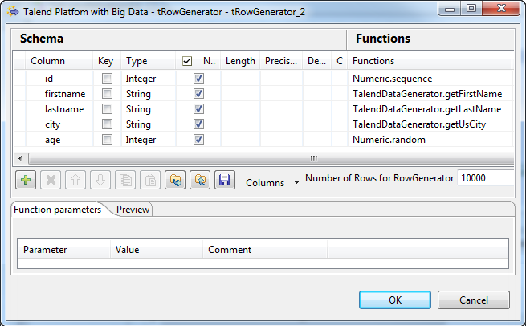
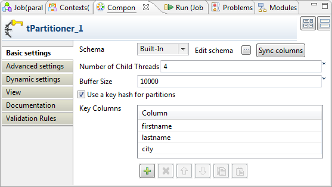
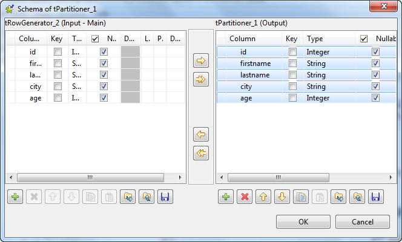
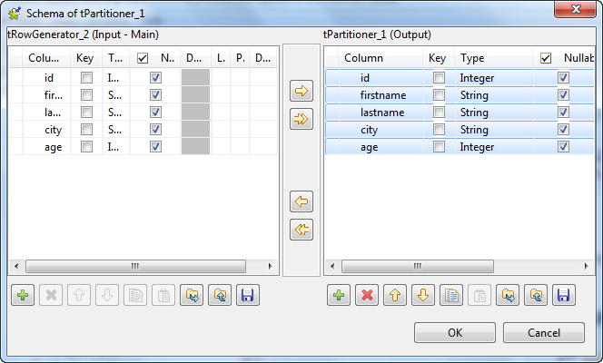
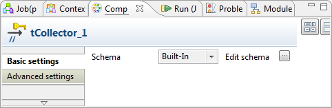
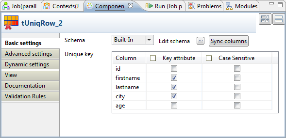
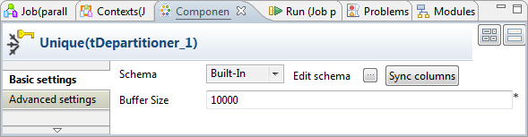
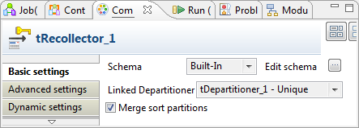
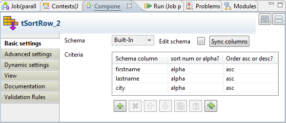

Avertissement
Ce composant est disponible dans la Palette de la perspective Integration de votre studio si vous avez souscrit à l'une des solutions Talend Platform ou Big Data.
Les composants de parallélisation fonctionnent ensemble en étroite relation pour accomplir des exécutions parallèles de processus donnés. Le composant tPartitioner divise les enregistrements d'entrée en un nombre spécifique de process. Le tCollector envoie ces process aux composants suivants. Le tDepartitioner regroupe les sorties des process parallèles traités. Le composant tRecollector capture la sortie d'un tDepartitioner donné et envoie les données capturées au composant suivant.
|
Famille de composant |
Orchestration | |
|
Fonction |
Le composant tPartitioner divise les enregistrements d'entrée en un nombre de process que le tCollector envoie pour exécution parallèle. | |
|
Objectif |
Ce composant partitionne les données d'entrée avant que le tCollector les transfère aux processus d'exécutions parallèles. | |
|
Basic settings |
Schema et Edit Schema |
Un schéma est une description de lignes, i.e., il définit le nombre de champs qui sont traités et passés au composant suivant. Le schéma est soit local (Built-in) , soit distant dans le Repository. Cliquez sur Edit Schema pour modifier le schéma. Si vous effectuez des modifications, le schéma devient automatiquement built-in. Cliquez sur le bouton Sync columns pour récupérer le schéma du composant précédent. |
|
|
Number of Child Threads |
Saisissez le nombre de process que vous souhaitez obtenir en divisant les enregistrements d'entrée. Il est recommandé de saisir un nombre N-1 où N est le nombre total de CPUs ou coeurs de la machine traitant les données. |
|
|
Buffer Size |
Saisissez le nombre de lignes à traiter avant de libérer la mémoire. Ce nombre représente le nombre de lignes à mettre en cache pour chaque process généré. |
|
Use a key hash for partitions |
Cochez cette case pour utiliser le mode Hash pour répartir les enregistrements dans les process. Une fois la case cochée, la table Key Columns apparaît. Vous pouvez y configurer les colonnes sur lesquelles appliquer le mode Hash. En mode Hash, les enregistrements répondant aux critères sont répartis dans les mêmes process. Si vous laissez cette case décochée le mode de répartition est Round-robin, ce qui signifie que les enregistrements sont répartis un par un dans chaque process, de manière circulaire, jusqu'à ce que le dernier enregistrement soit distribué. Ce mode ne peut garantir que les enregistrements répondant aux critères vont bien dans les mêmes process. | |
| Advanced settings |
tStatCatcher Statistics |
Cochez cette case pour collecter les données de log au niveau du composant. |
|
Utilisation |
Ce composant doit être placé après le(s) composant(s) d'entrée et avant le tCollector. Ce composant utilise, et ne peut utiliser que le lien Trigger > Start pour se connecter au tCollector. | |
|
Global Variables |
NB_LINE : indique le nombre de lignes traitées. Disponible en tant que variable After.
Pour plus d'informations concernant les variables globales, consultez le Guide utilisateur de Talend Data Integration Studio. | |
|
Connections |
|
Liens de sortie (de ce composant au composant suivant) : Trigger : Start.
Liens d'entrée (du composant précédent à ce composant) : Row : Main.
Pour plus d'informations concernant les connexions, consultez le Guide utilisateur de Talend Data Integration Studio. |
|
Limitation |
n/a | |
Le Job de ce scénario utilise les composants de parallélisation afin de trier des doublons dans les enregistrements clients.
Ce scénario permet d'expliquer le mécanisme de collaboration et de fonctionnement entre les quatre composants de parallélisation.
Dans la perspective Integration de votre studio, créez un Job vide, nommé Parallelization, par exemple, à partir du nœud Job Designs dans la vue Repository.
Pour plus d'informations concernant la création d'un Job, consultez le Guide utilisateur de votre studio d'intégration.
Déposez les composants suivants de la Palette dans l'espace de modélisation graphique : un tRowGenerator, un tPartitioner, un tCollector, un tUniqRow, deux tDepartitioner, deux tRecollector, deux tSortRow et deux tLogRow.
Le tRowGenerator génère les données à transformer et à traiter en parallèle. Dans un cas d'utilisation réelle, vous pouvez utiliser d'autres composants, comme le tMysqlInput ou le tMap à la place du tRowGenerator afin de créer un processus sophistiqué pour préparer vos données à traiter.
Nommez les deux composants tDepartitioner Unique et Duplicates, respectivement.
Pour plus d'informations concernant le nommage d'un composant, consultez le Guide utilisateur de votre studio.
Répétez l'opération pour les deux tLogRow.
Reliez le tPartitioner au tCollector et à chaque tRecollector, à l'aide de liens Trigger > Starts.
Reliez les autres composants à l'aide d'un lien Row > Main. Utilisez un lien Row > Uniques pour connecter le tUniqRow au tDepartitioner nommé Unique et un lien Row > Duplicates pour relier le tUniqRow au composant tDepartitioner nommé Duplicates.
Procédure 18.1. Configurer les enregistrements d'entrée
Double-cliquez sur le tRowGenerator pour ouvrir son éditeur.
Cliquez cinq fois sur le bouton
 pour ajouter cinq lignes à la table Schema et renommez-les respectivement id, firstname, lastname,
city et age.
pour ajouter cinq lignes à la table Schema et renommez-les respectivement id, firstname, lastname,
city et age.Dans la colonne Type, sélectionnez le type Integer pour la ligne id et la ligne age.
Dans la colonne Functions, sélectionnez Numeric.sequence pour les lignes id et age.
Sélectionnez TalendDataGenerator.getFirstName pour la ligne firstname, TalendDataGenerator.getLastName pour la ligne lastname et TalendDataGenerator.getUsCity pour la ligne city.
Dans le champ Number of Rows for RowGenerator, saisissez le nombre de lignes d'entrée que vous souhaitez générer. Dans cet exemple, saisissez 10000. Dans un cas d'utilisation réelle, le nombre est souvent tellement grand que les composants de parallélisation sont idéaux pour gérer le volume.
Cliquez sur OK pour valider ces modifications et acceptez la propagation proposée par la boîte de dialogue.
Procédure 18.2. Configurer le composant tPartitioner
Double-cliquez sur le tPartitioner pour ouvrir sa vue Component.
Dans le champ Number of Child Threads, saisissez le nombre de process (threads) que vous souhaitez obtenir en divisant les enregistrements d'entrée. Dans cet exemple, saisissez 4.
Si nécessaire, modifiez la valeur dans le champ Buffer Size afin d'adapter la capacité de la mémoire. Dans cet exemple, laissez la valeur par défaut.
Cochez la case Use a key hash for partitions pour afficher la table Key Columns.
Cliquez trois fois sur le bouton
pour ajouter trois lignes, puis sélectionnez firstname, lastname et city,
respectivement. Ces lignes sont les colonnes clés sur lesquelles le mode
Hash est appliqué pour répartir les enregistrements répondant aux mêmes
critères que ceux du mode hash dans les mêmes process.Cliquez sur le bouton
 à côté du champ Edit
schema pour ouvrir l'éditeur du schéma
à côté du champ Edit
schema pour ouvrir l'éditeur du schémaSélectionnez toutes les lignes du schéma du tPartitioner à l'aide des touches Ctrl ou Maj.
Le bouton
 est alors disponible dans la barre d'outils.
est alors disponible dans la barre d'outils.Cliquez sur le bouton
pour copier le schéma sélectionné.
Procédure 18.3. Configurer le tCollector
Double-cliquez sur le tCollector pour ouvrir sa vue Component.
Cliquez sur le bouton
à côté du champ Edit
schema pour ouvrir l'éditeur de schéma.Appuyez sur les touches Ctrl+V pour coller le schéma du composant tPartitioner.
Cliquez sur OK pour valider ces modifications et acceptez la propagation proposée par la boîte de dialogue.
Procédure 18.4. Configurer le tUniqRow
Double-cliquez sur le tUniqRow pour ouvrir sa vue Component.
Dans la table Unique key, le schéma apparaît automatiquement. Cochez les cases correspondant aux lignes firstname, lastname et city dans la colonne Key attribute. Le Job se base sur les trois colonnes pour trier les doublons.
Si le schéma n'apparaît pas, cliquez sur le bouton Sync columns pour récupérer le schéma du composant précédent.
Procédure 18.5. Vérifier le tDepartitioner
Double-cliquez sur le tDepartitioner nommé Unique pour ouvrir la vue Component. Ce composant est connecté via la lien Unique.
Si nécessaire, modifiez la valeur du champ Buffer Size pour adapter la capacité de la mémoire. Dans cet exemple, laissez la valeur par défaut.
Cliquez sur le bouton
à côté du champ Edit
schema Pour ouvrir l'éditeur de schéma, puis, vérifiez que
toutes les colonnes dont vous avez besoin apparaissent dans le schéma du
tDepartitioner. Dans ce scénario,
écrivez en sortie toutes les colonnes reçues des composants
précédents.Répétez l'opération pour vérifier le composant tDepartitioner nommé Duplicates.
Procédure 18.6. Capturer les lignes uniques
Double-cliquez sur le composant tRecollector relié au tLogRow nommé Unique, pour ouvrir la vue Component de ce tRecollector.
Cliquez sur le bouton
à côté du champ Edit
schema pour ouvrir l'éditeur du schéma puis collez le schéma
du tPartitioner précédemment copié.Ce schéma doit être cohérent avec celui du composant tDepartitioner fournissant les données au tRecollector. Dans cet exemple, le tDepartitioner à utiliser possède le même schéma que le tPartitioner. Si ce n'est pas votre cas, copiez-collez le schéma du tDepartitioner à utiliser.
Cliquez sur OK pour valider les modifications et acceptez la propagation proposée par la boîte de dialogue.
Dans le champ Linked Departitioner, sélectionnez le composant tDepartitioner contenant les données uniques. Dans cet exemple, c'est le composant tDepartitioner nommé Unique. Sélectionnez tDepartitioner_1 - Unique.
Procédure 18.7. Trier les lignes uniques
Double-cliquez sur le composant tSortRow relié au composant tLogRow nommé Unique pour ouvrir la vue Component de ce tSortRow.
Sous la table Criteria, cliquez trois fois sur le bouton
pour ajouter les trois lignes à la table.Dans la colonne Schema column, sélectionnez, pour chaque ligne, la colonne du schéma à utiliser comme critère de filtre. Dans cet exemple, sélectionnez firstname, lastname et city.
Dans la colonne Sort num or alpha?, sélectionnez alpha pour les trois lignes, car les données des colonnes firstname, lastname et city sont des lettres.
Dans la colonne Order asc or desc, sélectionnez asc pour les trois lignes.
Double-cliquez sur le composant tLogRow nommé Unique pour ouvrir sa vue Component.
Dans la zone Mode, sélectionnez Table (print values in celles of a table).
Vous devez configurer le tRecollector, le tSortRow et le tLogRow (nommé Duplicate) afin d'écrire en sortie les lignes en doublon.
Répétez, sur ces composants, les opérations effectuées précédemment pour écrire les lignes uniques, mais sélectionnez tDepartitioner_2 - Duplicate, dans le champ Linked tDepartitioner dans l'onglet Basic settings du tRecollecter à utiliser pour les lignes en doublon.